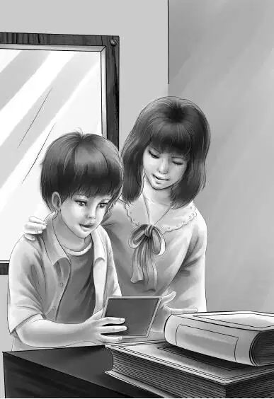

That night， the Aldens slept and slept. Henry was the first one to wake up. He was in the upper bunk. This was really the lookout with windows on all sides.
“Raining！” said Henry to himself. “Just look at the rain！I think the rain woke me up.”
The water was running down all the windows， making a loud tapping sound on the top of the caboose. Henry climbed down and found Mr. Alden and Benny awake.
“It’s pouring，” said Benny. “I don’t like that. I never thought of rain. We can’t sit out on the back platform at all.”
“Don’t worry about that，” said Henry. “We’ll find plenty to do.” He could see the girls walking around in the other caboose.
As Benny dressed， he looked around the big caboose. He thought about Cho-Cho， and Chi-Chi’s necklace， and the talking horse.
When the family sat down to breakfast， Mr. Alden said， “Now Ben， tell us how you got lost.”
Benny told the whole story. At the end he said， “Grandfather， you can see that Charley needs a knife if he has to use a sharp stone. Do you suppose you and I could give him one？”
“Maybe we could，” said Mr. Alden with a smile.
All this time Henry was thinking. He said， “Everything would be all fixed up if we could only find that diamond necklace. Cho-Cho could sell it and buy his horse back. Then maybe the Thin Man would not be afraid to see his friends.”
Violet said， “I worry about that Thin Man. And I don’t know a thing we can do.” She looked out of the window. “Just listen to that rain，”she went on. “And look at the trees. They are all bent over in the wind. I never saw it rain so hard. What a storm！”
“I’m sorry，” said Jessie， looking out of the window. “I’ll tell you why I’m sorry. I didn’t plan very well for rain. Today I was going to make a big stew， but I didn’t get the meat.”
“Never mind， Jessie，” said Henry. “I have a raincoat. I’ll get off at the next stop and buy whatever you want.”
Mr. Alden said， “Mr. Carr told me that we don’t make many stops， but the next one is quite a large town. Henry would have time to get meat， because we stay there for half an hour.”
“That will be fine，” said Jessie. “It will give the stew three hours to cook.”
“Make a list of what you need， Jessie，” said Henry. “I’ll get on my rain things.”
Benny said， “Here’s an old pair of boots under the sink.”
Henry put on his raincoat and pulled a black rain hat over his ears. He pulled on the big boots.
Jessie said， “Here’s the list. I hope you can get everything.”
Henry was a funny looking sight. He had a red scarf around his neck to hold up his collar. The boots were too big for him. Soon the train went past a big station and stopped above it. Henry opened the door and ran down the steps in the rain. Just as Henry reached the platform， Al met him. The two went off together.
“Good！” said Grandfather. “Al will know where the stores are.”
Jessie and Violet began to heat water for dishes. The sink was so small that they washed a few and put them away. Then they washed some more.
“You make your bed now， Benny，” said Jessie. “That will give you something to do. And the caboose will look better.”
“I’ll make all the beds in this Number 777，” said Benny. “The top bunk in the lookout is really mine， and I’ll sleep there tonight.”
The girls peeled onions and potatoes for the stew. They went into the small caboose and made their own beds.
“Ha！” called Benny from the lookout.
“What’s the matter？” asked Grandfather.
“Nothing—just the stuffing is coming out of my mattress. It makes me sneeze.”
“Yes，” said Grandfather， “I’ve heard you sneeze. I thought you had a cold.”
“No，” said Benny. “No cold—just stuffing. Some day will you mend my mattress， Jessie？”
“Of course，” said Jessie， “but not right now.”
Soon Grandfather said， “Here’s Henry back again. See him run！He can hardly stand up.”
Henry pushed the door open and came in， dripping water all over the floor. “It’s a cloud-burst！” he said.
Henry took off his wet things and hung them around the little caboose to dry. Jessie took out the carrots， the beef， milk， and other things that Henry had bought. She filled the biggest kettle with water. In went the onions， the meat， and some salt. She put on the cover.
“Thank you for the newspaper， Henry，” said Grandfather. “Rain all day，” he went on. “That’s what the paper says.”
“I don’t care，” Benny said. “I like it.”
“I thought you didn’t like it，” said Henry laughing.
Benny said， “I’ve been thinking about Number 777. I’m sure it does have a mystery. And a rainy day is a good one to work on a mystery. You know that necklace may be right in plain sight.”
“It couldn’t be，” Henry said. “We’d have seen it， Benny.”
“I mean it could be in something we look at everyday，” said Benny.
“Now that’s a good idea.” Henry looked at his brother. “I believe you might be right， Ben，” he said. “I don’t think the police looked in everything after the Thin Man ran away. I’m sure they thought he stole it.”
“Let’s begin again and look everything over，” Benny said.
They began by the door. Henry took the old stove apart. Jessie laughed and took the lamp apart. Violet began to take the canned vegetables off the shelves， to look under the papers.
Benny went to the bookcase beside the desk. He shook every book. A few old papers fell out. Benny looked at every one， but he could not find a single clue. He began to put the books back. Some of them were quite tall.
As Benny started to put the books on the shelf， he saw something he had not seen before. It was an old postcard tacked up on the wall behind the books. Benny took out the thumbtack and looked at the postcard. His heart beat faster when he saw that it was addressed to Cho-Cho. He turned it over and read the three lines written there.
“Look！” he shouted. “Look at this， Grandfather！” He was so excited that he dropped the card. He picked it up and watched his grandfather as he read，
If you are a Clown，
Be on the lookout
For things in a crown.

“Well， well，” said Mr. Alden. “This is a real clue， Benny！It is signed right here by Chi-Chi.”
Jessie said， “Surely things in a crown would be diamonds！”
“I do think you’re right，” said Henry. “But it still doesn’t mean much to me.”
“It didn’t mean much to Cho-Cho，” agreed Mr. Alden， “or he would have told us about it. Or maybe he never found it.”
“He must have，” said Benny. “It went through the postoffice. It’s a clue all right. Perhaps there was something in the shape of a crown where she hid the necklace. We’ll have to think about it.”
Jessie jumped up. “I’ll have to think about the stew！Just smell it！”
She cut up the potatoes and carrots and put them into the stew. When they were done， Violet got five dishes out of the closet. Some were bowls and some were soup plates.
Jessie served the stew. She said， “We have rolls and milk and the stew， and that’s all.”
“That’s enough，” said Grandfather. “This is delicious， Jessie.”
The rain poured down all day. Mr. Alden said， “This is almost a hurricane. I hope tomorrow will be pleasant.”
Mr. Alden got his wish. When the Aldens woke up the next morning， the sun was shining.
About the middle of the morning， there was a loud knock on the door of the caboose.